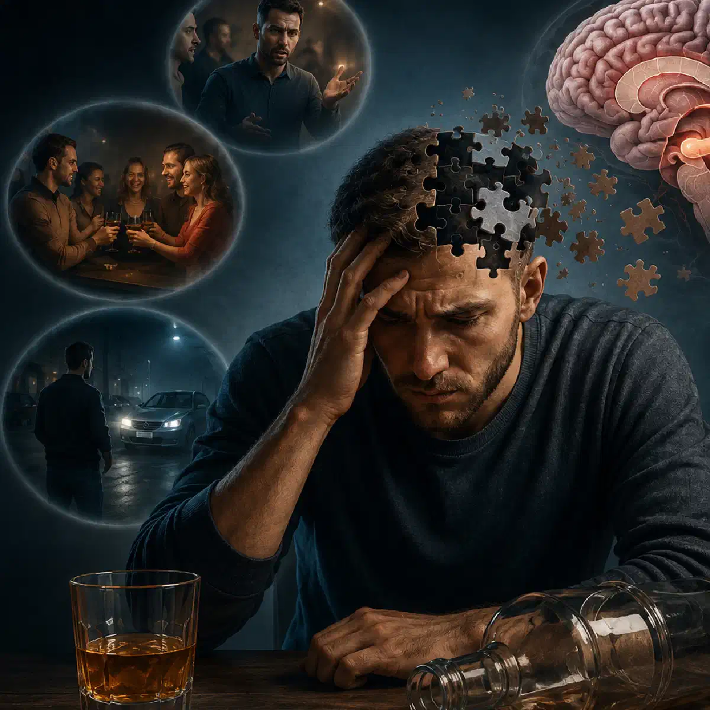

+38(068) 79 72 782
+38(068) 79 72 782Алкогольна амнезія
Провали в пам'яті після алкоголю – ознака ураження мозку


Безкоштовна консультація, працюємо цілодобово 24/7
Провали в пам'яті після алкоголю – ознака ураження мозку

Дата написання: 17 січ. 2026 р.
Останнє оновлення: 17 січ. 2026 р.
Алкогольна амнезія — це часткова або повна втрата спогадів про події, що відбувалися під час вживання спиртного. Людина може розмовляти, пересуватися, користуватися телефоном, спілкуватися з оточенням і виконувати звичні дії, але після протверезіння не пам’ятати окремі епізоди або весь період сп’яніння. Такий стан називають алкогольним провалом у пам’яті або блекаутом. Він відрізняється від втрати свідомості: під час амнезії людина може зовні залишатися активною, однак її мозок тимчасово втрачає здатність повноцінно закріплювати нову інформацію в довготривалій пам’яті.
Одиничний провал не дає змоги автоматично встановити діагноз алкогольної залежності, але завжди свідчить про небезпечний ступінь впливу етанолу на мозок. Якщо епізоди повторюються, виникають після запоїв або супроводжуються втратою контролю над кількістю випитого, необхідні консультація нарколога та повноцінне обстеження. Особливо небезпечні ситуації, коли амнезія поєднується з травмою голови, судомами, втратою свідомості, порушенням мовлення, вираженою слабкістю, галюцинаціями або утрудненим диханням. У подібних випадках потрібне не спостереження вдома, а термінова медична допомога.
Провали в пам’яті виникають через те, що етанол порушує роботу ділянок мозку, відповідальних за формування та закріплення нових спогадів. Насамперед страждає гіпокамп — структура, що бере участь у переведенні інформації з короткочасної пам’яті в довготривалу. Під час алкогольної амнезії людина може сприймати те, що відбувається, та утримувати інформацію протягом короткого часу. Наприклад, вона здатна підтримувати розмову або виконати просте прохання. Однак події не закріплюються належним чином, тому наступного дня відновити їх самостійно не вдається. Ризик провалу в пам’яті підвищується, коли концентрація алкоголю в крові швидко зростає. Це може відбуватися під час вживання міцних напоїв великими порціями, швидкого темпу застілля або вживання спиртного натщесерце. Значення мають не лише кількість випитого, а й:
Неможливо назвати одну точну дозу, після якої амнезія обов’язково виникне в кожної людини. Реакція залежить від індивідуальних особливостей організму та обставин вживання.
Етанол впливає не лише на пам’ять, а й на увагу, мовлення, координацію, швидкість реакції, критичне мислення та здатність оцінювати наслідки власних дій. У міру посилення сп’яніння людина гірше сприймає нову інформацію, стає менш уважною та може ухвалювати ризиковані рішення.
За високої концентрації алкоголю мозок продовжує обробляти окремі сигнали, однак механізм формування послідовних спогадів порушується. Саме тому вранці людина може пам’ятати початок вечора, але не пам’ятати дорогу додому, зміст розмов або власні вчинки. Регулярне тяжке вживання може призводити до більш стійких когнітивних порушень. Людина починає скаржитися на забудькуватість, зниження концентрації, загальмованість, труднощі під час навчання та погіршення здатності планувати свої дії.
Особливо несприятливим є поєднання алкоголю із заспокійливими, снодійними або іншими речовинами, що пригнічують центральну нервову систему. Такі комбінації можуть посилювати порушення пам’яті та одночасно підвищувати ризик втрати свідомості, пригнічення дихання й інших небезпечних ускладнень. За змішаної інтоксикації стандартної допомоги після вживання спиртного може бути недостатньо. Наприклад, крапельниця від наркотиків у Черкасах розглядається лише після огляду лікаря та визначення речовин, які могли вплинути на стан пацієнта.
Головною безпосередньою причиною є швидке підвищення концентрації етанолу в крові. Чим швидше людина випиває велику кількість спиртного, тим вища ймовірність порушення формування спогадів. До основних провокуючих чинників належать вживання міцних напоїв залпом, змішування різних видів алкоголю, відсутність їжі, низька маса тіла, зневоднення, втома та тривале неспання. Амнезія також може виникати на тлі:
Якщо провали в пам’яті з’являються регулярно, причина може полягати не лише в одиничному перевищенні дози, а й у розладі, пов’язаному з уживанням алкоголю, що розвивається. У такому разі потрібне не лише усунення похмілля, а й комплексне лікування алкоголізму в Дніпрі, що включає діагностику, детоксикацію, психологічну підтримку та профілактику повторних епізодів.
Алкогольні провали в пам’яті заведено поділяти на фрагментарні та повні. Між ними існують відмінності в обсязі втрачених спогадів і можливості відновити окремі події. За фрагментарної амнезії в пам’яті залишаються окремі епізоди. Людина може пам’ятати початок застілля, деякі розмови або дорогу додому, але між цими спогадами залишаються прогалини. Іноді відсутні фрагменти частково відновлюються після підказок оточення, перегляду листування, фотографій або відеозаписів. За повної амнезії з пам’яті зникає тривалий проміжок часу. Підказки зазвичай не допомагають, оскільки інформація не була нормально закріплена мозком. Людина може дізнатися про власні дії лише зі слів інших людей.
Також необхідно відрізняти алкогольну амнезію від втрати свідомості. Під час блекауту людина залишається при свідомості та може взаємодіяти з оточенням. За тяжкого отруєння вона може перестати реагувати на голос і дотики, втратити захисні рефлекси або почати дихати рідко та нерівномірно. Це вже не звичайний провал у пам’яті, а потенційно загрозливий для життя стан.
Фрагментарна втрата пам’яті проявляється окремими прогалинами. Події до та після них можуть зберігатися. Людина пам’ятає, де перебувала, але не може пригадати частину розмови, здійснену покупку, конфлікт або переміщення з одного місця до іншого.
Таку форму іноді помилково сприймають як нешкідливу забудькуватість. Однак навіть невеликий провал означає, що алкоголь уже порушив нормальну роботу механізмів пам’яті. Повна втрата пам’яті охоплює весь період тяжкого сп’яніння тривалістю від кількох хвилин до кількох годин. Людина може активно спілкуватися та виглядати відносно бадьорою, але пізніше не згадає нічого з того, що відбувалося.
Повні епізоди особливо небезпечні, оскільки під час них людина не здатна адекватно оцінювати ризики. Підвищується ймовірність падінь, дорожньо-транспортних пригод, конфліктів, незахищених контактів, отруєння та повторного вживання алкоголю через нездатність контролювати вже прийняту дозу. Якщо втрата пам’яті виникла після тривалого вживання, першим етапом допомоги може стати виведення із запою в Києві під контролем медичного спеціаліста. Детоксикація може полегшити абстинентні прояви, однак вона не повертає спогади, які не були сформовані під час сп’яніння.
Алкогольний палімпсест — це термін, яким традиційно позначають фрагментарну втрату пам’яті після вживання спиртного. Людина забуває окремі епізоди, тоді як загальна послідовність вечора частково зберігається.
Наприклад, вона може пам’ятати зустріч із друзями та повернення додому, але не пам’ятати, що відбувалося між цими подіями. Після розповідей оточення деякі фрагменти іноді відновлюються, але частина епізодів залишається недоступною. Поява алкогольних палімпсестів вважається тривожною ознакою. Якщо вони повторюються, це може свідчити про небезпечний характер вживання, швидке досягнення високої концентрації алкоголю в крові та зниження контролю над кількістю випитого.
Не слід намагатися «тренувати» переносимість спиртного або шукати дозу, за якої провалів не буде. Навіть за однакової кількості алкоголю реакція організму може змінюватися залежно від харчування, втоми, стану печінки, лікарських препаратів і швидкості вживання. За повторних палімпсестів рекомендується консультація нарколога в Запоріжжі або звернення до спеціаліста за місцем проживання. Лікар оцінить характер уживання, стан пам’яті та необхідність додаткової діагностики.
Основна причина полягає не у звичайному забуванні, а в порушенні запису інформації. Під час алкогольної амнезії мозок не створює повноцінного довготривалого спогаду про те, що відбувається.
Тому людина може щиро не пам’ятати свої слова та дії. Це не завжди означає, що вона свідомо обманює родичів. Однак відсутність спогадів не скасовує можливих наслідків здійснених учинків. Іноді пам’ять частково повертається після підказки. Це більш характерно для фрагментарної форми. За повної амнезії відновити події зазвичай неможливо, оскільки відповідна інформація не була нормально збережена.
Якщо провали в пам’яті з’явилися після тривалого вживання спиртного, виведення із запою вдома в Києві може стати першим етапом медичної допомоги. Перед процедурою лікар повинен оцінити стан пацієнта та виключити небезпечні ускладнення, за яких потрібна госпіталізація.
Провал у пам’яті також може бути пов’язаний не лише з алкоголем. Подібні прояви трапляються після травми голови, судомного нападу, вживання деяких препаратів, різкого зниження рівня глюкози, інсульту та інших неврологічних станів. Якщо амнезія супроводжується сильним головним болем, повторним блюванням, асиметрією обличчя, слабкістю руки або ноги, порушенням мовлення чи незвичною сонливістю, необхідно терміново викликати екстрену медичну допомогу.
Після багатоденного запою порушення пам’яті можуть бути пов’язані одразу з кількома чинниками: повторними епізодами інтоксикації, зневодненням, недосипанням, недостатнім харчуванням, дефіцитом вітамінів і загальним перевантаженням нервової системи.
Людина може не пам’ятати окремі дні, плутати послідовність подій, не розуміти, скільки алкоголю вжила, або не усвідомлювати тривалість запою. Після припинення вживання можуть з’явитися тривога, тремор, безсоння, нудота, пітливість, стрибки артеріального тиску та прискорене серцебиття. Різко припиняти тривалий запій без медичного оцінювання може бути небезпечно. У деяких пацієнтів абстинентний синдром ускладнюється судомами, галюцинаціями, вираженим збудженням і порушенням свідомості.
Залежно від тяжкості стану лікування проводиться вдома або в умовах госпіталізації. Виведення із запою вдома можливе лише за відносно стабільного стану, відсутності тяжких ускладнень і після огляду спеціаліста. За сплутаності свідомості, судом, галюцинацій, болю в грудях або порушення дихання потрібен стаціонар. Інфузійна терапія допомагає поповнити дефіцит рідини та електролітів і зменшити деякі прояви інтоксикації. Наприклад, крапельниця від алкоголю в Харкові підбирається індивідуально після оцінювання артеріального тиску, пульсу, свідомості, дихання та супутніх захворювань.
Основна небезпека полягає в тому, що людина продовжує діяти, але не формує спогадів і гірше контролює свою поведінку. Вона може повторно випивати, не пам’ятаючи попередню дозу, залишати безпечне місце, сідати за кермо або вступати в конфлікт. Можливі наслідки включають:
Часті провали можуть бути ознакою небезпечного вживання та супроводжуватися погіршенням уваги, пам’яті й здатності ухвалювати рішення. Особливо несприятливими є амнезії, які виникають дедалі частіше або після меншої кількості спиртного, ніж раніше. Не можна вважати блекаут нормальною частиною застілля. Навіть якщо вранці людина почувається задовільно, провал у пам’яті свідчить про значний вплив алкоголю на мозок.
Спочатку необхідно оцінити поточний стан. Якщо людина перебуває при свідомості, нормально дихає, орієнтується в тому, що відбувається, та не має ознак травми, їй слід забезпечити спокій і спостереження з боку тверезого дорослого. Не слід давати нову порцію алкоголю, самостійно призначати сильнодійні заспокійливі або намагатися викликати блювання в сонливої людини. Не можна залишати її наодинці, особливо якщо кількість випитого невідома. Необхідно терміново звертатися по екстрену допомогу, якщо спостерігаються:
Якщо стан відносно стабільний, але зберігаються нудота, тремор, тривога та ознаки зневоднення, лікар може розглянути інфузійну допомогу. Крапельниця від алкоголю вдома в Одесі проводиться після огляду та не повинна використовуватися як спосіб продовжити вживання або швидко підготуватися до нового застілля.
Після відновлення важливо спокійно обговорити те, що сталося. Повторні провали, запої та неможливість зупинитися після першої дози є підставою для звернення до нарколога.
Окремого аналізу, здатного достовірно підтвердити алкогольний провал у пам’яті, який уже завершився, зазвичай не існує. Діагноз встановлюється на підставі розповіді пацієнта, відомостей від очевидців та оцінювання обставин вживання. Лікар уточнює:
Проводиться оцінювання свідомості, орієнтації, пам’яті, мовлення, координації та неврологічного стану. За потреби призначаються аналізи крові, перевірка рівня глюкози, функції печінки та інших показників. Після травми голови, за судом, вогнищевих неврологічних симптомів або тривалої сплутаності свідомості можуть знадобитися інструментальні обстеження та огляд невролога. Важливо виключити інсульт, черепно-мозкову травму, епілептичний напад, тяжке порушення обміну речовин і змішану інтоксикацію.
Спеціального препарату, здатного повернути не сформовані під час сп’яніння спогади, не існує. Лікування спрямоване на стабілізацію поточного стану, усунення інтоксикації, профілактику ускладнень і зниження ризику повторних епізодів. Якщо амнезія виникла одноразово, лікар оцінює обставини вживання та загальний стан пацієнта. За регулярних провалів потрібна більш глибока діагностика алкогольної залежності, стану нервової системи, печінки та харчування. Комплексна допомога може включати:
Після стабілізації стану можуть розглядатися методи підтримання тверезості. Кодування від алкоголізму у Львові проводиться добровільно, після обстеження та пояснення пацієнту принципу дії, обмежень і можливих ризиків. Кодування не замінює психотерапевтичну роботу та зміну звичного способу життя. Важливо не відкладати лікування до появи тяжких ускладнень. Чим частіше повторюються провали в пам’яті, тим вища ймовірність нових травм, конфліктів, запоїв і погіршення когнітивних функцій.
Алкогольна амнезія під час сп’яніння та синдром Корсакова — не одне й те саме. Звичайний блекаут є тимчасовим порушенням формування спогадів на тлі гострої дії алкоголю. Синдром Корсакова — тяжке та більш стійке порушення пам’яті, часто пов’язане з вираженим дефіцитом тіаміну, або вітаміну B1. Такий дефіцит може розвиватися за тривалого тяжкого вживання алкоголю, недостатнього харчування та порушення всмоктування поживних речовин.
За синдрому Корсакова людина погано запам’ятовує нову інформацію, забуває недавні події, може багаторазово ставити одні й ті самі запитання та заповнювати прогалини в пам’яті вигаданими або спотвореними поясненнями, не намагаючись свідомо обманути оточення. Синдрому Корсакова може передувати енцефалопатія Верніке — гострий неврологічний стан, за якого можливі сплутаність свідомості, порушення координації та проблеми з рухами очей. Така ситуація потребує термінової медичної допомоги. Не кожен алкогольний провал призводить до синдрому Корсакова. Однак регулярне тяжке вживання, запої, погане харчування та повторні когнітивні порушення збільшують підстави для медичного обстеження.
Єдиний надійний спосіб виключити алкогольну амнезію — не вживати спиртне. Неможливо заздалегідь визначити безпечну дозу, яка гарантовано не спричинить провал у конкретної людини. Спроби знизити ризик за допомогою щільної їжі, води або повільного темпу не роблять уживання безпечним. Ці заходи можуть вплинути на швидкість всмоктування алкоголю, але не забезпечують захисту від амнезії, отруєння або травм. Якщо провал уже виник хоча б один раз, необхідно переглянути ставлення до вживання. Особливо важливо припинити експерименти з дозами, якщо блекаут супроводжувався травмою, втратою свідомості, конфліктом або небезпечною поведінкою. Для запобігання повторним епізодам важливо:
Людині із залежністю може бути складно припинити вживання лише завдяки силі волі. У такій ситуації краще заздалегідь скласти план лікування та профілактики зривів разом із наркологом.
Анонімна наркологічна допомога дає змогу звернутися до спеціаліста без страху осуду та непотрібного розголошення особистої інформації. Лікар оцінює тривалість вживання, наявність запоїв, частоту провалів у пам’яті, хронічні захворювання та психологічні причини залежності. Допомога може включати консультацію, детоксикацію, лікування абстинентного синдрому, психологічну підтримку, кодування та реабілітаційну програму. Конкретний план формується індивідуально після обстеження.
Якщо пацієнт перебуває у стабільному стані, частина процедур може проводитися вдома. За судом, галюцинацій, порушення свідомості, тяжкої задишки, болю в грудях або підозри на травму голови необхідні госпіталізація та цілодобове спостереження. Алкогольні провали в пам’яті не можна ігнорувати або сприймати як смішний епізод після застілля. Своєчасне звернення по допомогу дає змогу знизити ризик повторної амнезії, небезпечних ускладнень і подальшого розвитку залежності.
Телефон для консультації: +38(050-021-69-57)

Статтю перевірено експертом
Могучев Станіслав
Лікар-терапевт, ординатор
Можливо цікава стаття:
Янтарна кислота, Бетаргін та Ентеросгель при алкогольної інтоксикації

Так, ми суворо дотримуємося повної конфіденційності на всіх етапах лікування. Інформація про пацієнта, діагноз та проходження терапії не передається третім особам. Звернення до нас не тягне за собою постановку на облік. Ви можете бути впевнені у безпеці та анонімності.
Програма лікування розробляється індивідуально після консультації з фахівцем. Враховуються вид залежності, її тривалість, фізичний та психологічний стан пацієнта. Такий підхід дозволяє підвищити ефективність терапії та знизити ризик зриву. Ми не використовуємо шаблонні рішення.
Так, ми супроводжуємо пацієнтів і після основного курсу лікування. Проводяться консультації, рекомендації щодо адаптації та профілактики рецидивів. За потреби можлива подальша психологічна підтримка. Це допомагає зберегти результат та повернутися до повноцінного життя.
Номер телефону:
+380 (68) 797 27 82
+380 (50) 021 69 57
Адресу наркологічного центра вашого міста уточнюйте за
телефоном
Працюємо: Київ, Одеса, Львів, Харків, Дніпро, Запоріжжя,
Черкасах, Чугуєві, Чорноморську, Кам'янському
Telegram: t.me/umbrellaplus
Графік работы: Цілодобово